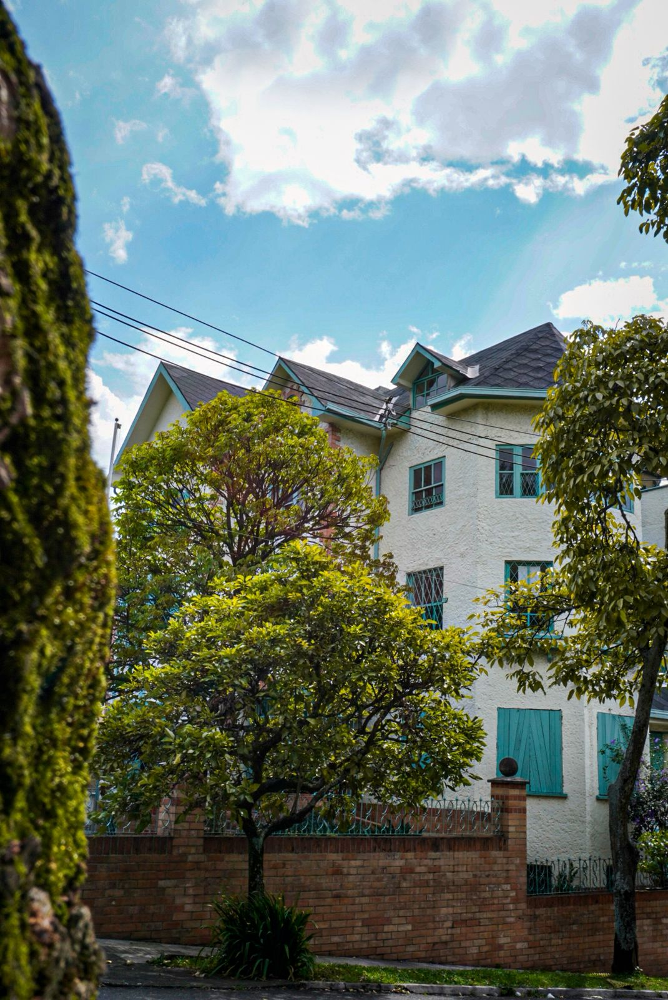
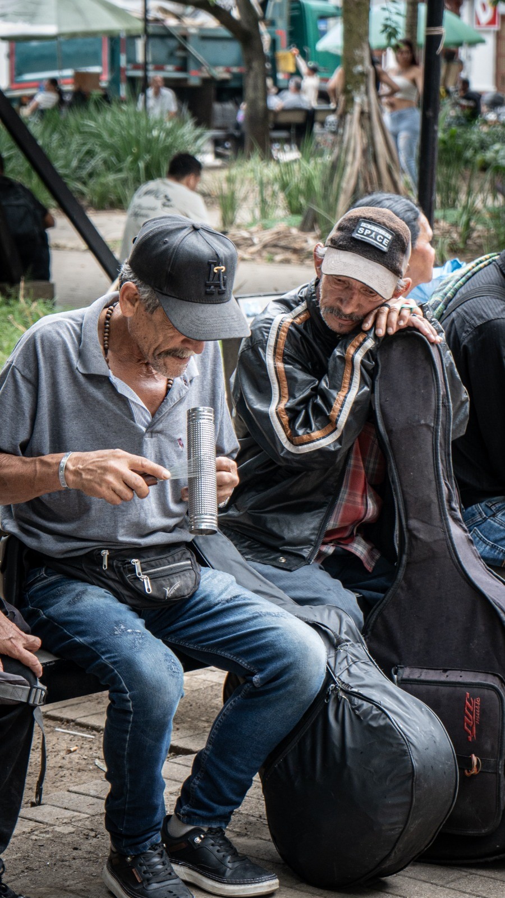

Sobre nosotros
Latido Rural nace de la necesidad de mirar el territorio desde la sensibilidad, la memoria y lo humano.
Somos un colectivo de fotógrafos que documenta historias, procesos y comunidades a través de una fotografía con enfoque social y documental.
Creemos en la imagen como una herramienta de memoria, identidad y transformación cultural. Más que capturar momentos, buscamos construir relatos visuales que conecten a las personas con los territorios, sus voces y sus realidades.
Trabajamos junto a instituciones, proyectos culturales, organizaciones y comunidades que entienden el valor de narrar lo cotidiano, preservar la memoria y visibilizar aquello que muchas veces pasa desapercibido.
Nuestra mirada se construye desde la cercanía, la escucha y el respeto por cada historia.
Si quieres saber más de Latido Rural, síguenos o contáctanos a través de nuestras redes.
Servicios
Narrativas visuales documentales
Creación de series fotográficas con enfoque humano, territorial y social para proyectos culturales, comunitarios e institucionales.
Ideal para:
- Fundaciones
- ONG
- Proyectos sociales
- Colectivos culturales
- Instituciones públicas
- Marcas con impacto social
Incluye:
- Investigación visual
- Registro fotográfico en territorio
- Curaduría de imágenes
- Edición documental
- Entrega para prensa, memoria o difusión

Cobertura cultural y comunitaria
Registro visual de eventos, encuentros, procesos artísticos y actividades comunitarias desde una mirada narrativa y sensible.
Ejemplos:
- Festivales
- Ferias
- Encuentros rurales
- Procesos pedagógicos
- Activaciones culturales
- Eventos institucionales
“No documentamos solo lo que ocurre, documentamos lo que se siente.”
